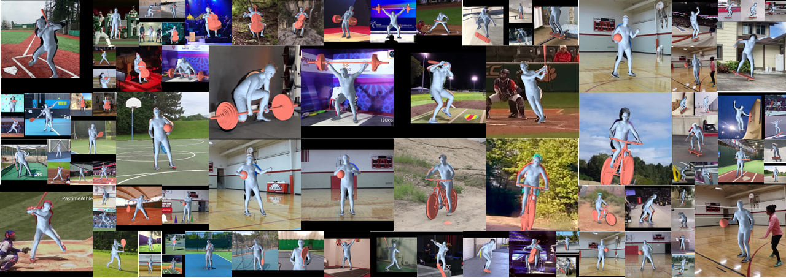

WildHOI: Monocular Human-Object Reconstruction in the Wild
Abstract
Learning the prior knowledge of the 3D human-object spatial relation is crucial for reconstructing human-object interaction from images and understanding how humans interact with objects in 3D space. Previous works learn this prior from datasets collected in controlled environments, but due to the diversity of domains, they struggle to generalize to real-world scenarios. To overcome this limitation, we present a 2D-supervised method that learns the 3D human-object spatial relation prior purely from 2D images in the wild. Our method utilizes a flow-based neural network to learn the prior distribution of the 2D human-object keypoint layout and viewports for each image in the dataset. The effectiveness of the prior learned from 2D images is demonstrated on the human-object reconstruction task by applying the prior to tune the relative pose between the human and the object during the post-optimization stage. To validate and benchmark our method on in-the-wild images, we collect the WildHOI dataset from the YouTube website, which consists of various interactions with 8 objects in real-world scenarios. We conduct the experiments on the indoor BEHAVE dataset and the outdoor WildHOI dataset. The results show that our method achieves almost comparable performance with fully 3D supervised methods on the BEHAVE dataset, even if we have only utilized the 2D layout information, and outperforms previous methods in terms of generality and interaction diversity on in-the-wild images.
Main Pipeline
The main pipeline of our method. We utilize the normalizing flow to learn the distribution of the 2D human-object keypoints in each image plane from vast images in the wild. The normalizing flow takes the input image $\mathbf{I}$ as the condition to transform the noize $\mathbf{z}$ from Gaussian distribution to the 2.5D keypoints $\mathbf{X}_{\text{2.5D}}$ which is intermediate representation combining the view pose $\rho$ and the 2D human-object keypoint layout $\Pi_\rho(\mathbf{X}_{\text{3D}})$. To train this conditioned normalizing flow, we collect a bunch of images from the Internet and group these images together based on the geometry consistency of the 2D human-object keypoints in each view. Then we incorporate the prior learned from 2D images into the post-optimization process. In the post-optimization stage, we project the 3D human-object keypoints onto different image planes of the virtual cameras to ensure the reconstructed results seem coherently observed from other views. Besides, we use the mean occlusion maps that are obtained by averaging the occlusion maps in the images to compute the contact loss. Our method is supervised without using any 3D annotations or commonsense knowledge of the spatial relation between the human and the object.
Qualitative Results
WildHOI Dataset
In order to validate our method in natural scenes, we collected the WildHOI dataset, which consists of a diverse range of videos from the YouTube website, capturing various natural scenes and human-object interactions. Overall, our dataset contains diverse interactions with 8 object categories in various real-world scenarios. Each image is annotated with the bounding boxes, masks, SMPL pseudo parameters, and the human-object keypoints. The statistics of the WildHOI dataset are as follows.
| Category | barbell | baseball bat | basketball | bicycle | cello | skateboard | tennis bat | violin | |
|---|---|---|---|---|---|---|---|---|---|
| Training | Videos | 204 | 372 | 84 | 224 | 204 | 280 | 339 | 184 |
| Frames | 37, 869 | 39, 871 | 36, 647 | 43, 094 | 101, 737 | 101, 643 | 82, 820 | 31, 049 | |
| Testing | Videos | 40 | 79 | 22 | 57 | 52 | 63 | 84 | 47 |
| Frames | 200 | 589 | 130 | 268 | 181 | 511 | 473 | 181 | |
We mannually annotate a small subset of images (0.7k~4k) with the 6D pose of objects in each category. (total: ~17k)

Citation
@article{huo2024monocular,
title={Monocular Human-Object Reconstruction in the Wild},
author={Huo, Chaofan and Shi, Ye and Wang, Jingya},
journal={arXiv preprint arXiv:2407.20566},
year={2024}
}